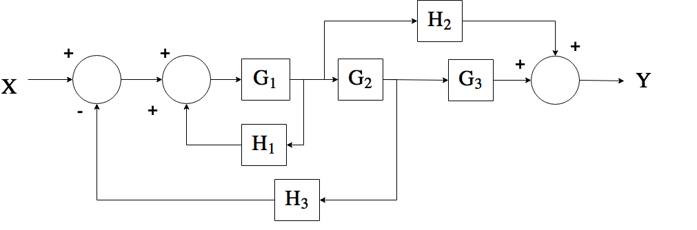

EECS 460 Discussion
Winter 2017
Introduction
Jonas Kersulis, GSI
kersulis@umich.edu- PhD student of Dr. Ian Hiskens
- Power and Energy major
- Controls minor
Meta
Office hours in EECS 2420
- Tuesday 3-4 PM (day before hw due, hour before discussion)
- Friday 1-2 PM (4th day covered)
Discussion format
- Review and motivation
- Problems to illustrate major concepts (similar to hw problems)
- Your hw problem questions
At times I will encourage you to solve problems in groups.
Requests welcome, e.g. if you're studying for the midterm and something isn't making sense, let me know and I'll make time for it.
I will post discussion notes after Monday's discussion. (No need to copy slides during discussion.)
Week 1 | 2017-01-09/10
- Control system representations
- Laplace transform
- Partial fractions
Motivation
- Describe systems using mathematics
- Work in frequency domain:
- Common operations become easier
- Closer to intuitive block form
- Transfer function: input/output relationship is algebraic
Laplace transform: tool for going from time domain to frequency domain
$\mathcal{L}\{f(t)\} = F(s) = \int_{0^-}^\infty f(t)e^{-st}dt$Ex. if $f(t) = e^{-at}u_s(t)$, $F(s) = \frac{1}{s+a}$
| Step | Tool |
|---|---|
| 1. Express system using diff. eq. | Physics |
| 2. Take $\mathcal{L}\{\cdot\}$ | Transform table |
| 3. Analyze | Algebra |
| 4. Take $\mathcal{L}^{-1}\{\cdot\}$ to obtain time signal | Partial fractions, transform table |
Problems
- Given $F(s) = \frac{2}{(s+1)(s+2)}$, find $f(t)$.
- Given $F(s) = \frac{1}{s^2 + 6s + 9}$, what is $f(t)$?
- Given a system with input $u(t)$, output $y(t)$, and dynamics given by $$\frac{d^3y(t)}{dt} + 12\frac{d^2y(t)}{dt} + 32\frac{dy(t)}{dt} = 32u(t),$$
a. Find the transfer function.
b. Solve for the output $y(t)$ given the input $u(t) = u_s(t)$.
Assume zero initial conditions.
Week 2 | 2017-01-09/17
- Control system representations for more complicated systems
- State-space <--> transfer function
- Block diagram reduction
Motivation
- Often we have several states and multiple inputs or outputs.
- We also frequently encounter complex systems best expressed with block diagrams.
We still want to be able to find transfer functions.
Tools:
- State-space representation
- Block diagram reduction
From lecture

From lecture

Problem 1
Part A: find a state-space representation of the transfer function:

Part B: find a state-space representation of the transfer function:

Problem 2
Go the other way: find the transfer function for the following state-space representation.
$$ \begin{align} \begin{bmatrix} \dot{x}_1 \\ \dot{x}_2 \\ \dot{x}_3 \end{bmatrix} &= \begin{bmatrix} 0 & 1 & 0 \\ 0 & 0 & 1 \\ -a_3 & -a_2 & -a_1 \end{bmatrix}\begin{bmatrix} x_1 \\x_2 \\x_3 \end{bmatrix} + \begin{bmatrix} 0 \\ 0 \\ 1 \end{bmatrix}u \\ y &= \begin{bmatrix} b_2 & b_1 & b_0 \end{bmatrix}\begin{bmatrix} x_1 \\ x_2 \\ x_3 \end{bmatrix} \end{align} $$Problem 3
Reduce the block diagram and write its transfer function.
